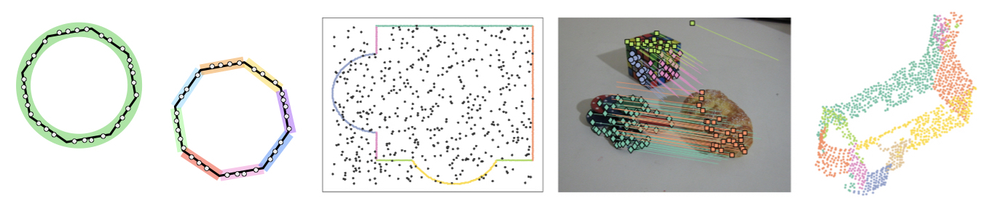
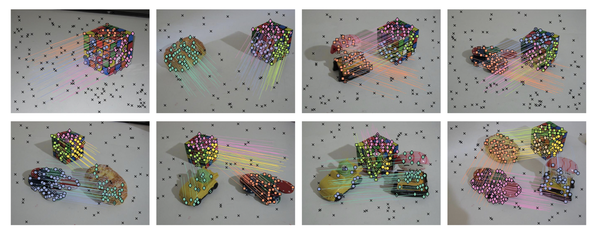

Fitting Multiple Heterogeneous Models by Multi-class Cascaded T-linkage
L. Magri, A. Fusiello

Overview
Multi-class cascaded T-Linkage (MCT) is a multi-model recovery framework that tackles the problem of multiple model fitting when the sought structures can be described by a mixture of heterogeneous parametic models drawn from different classes.
The main assumption is that model classes are nested and form a subsumption hierarchy (e.g. circle and line, fundamental matrix and homography, cylinder and plane).
MCT offers a hierarchical interpretation of data in nested compatible models, which can be biased to serve specific purposes exploiting user provided criteria. Specifically, a cascaded extension of T-linkage sequentially extract simpler nested models starting form the more general ones.
Geometric constraints (e.g. tangency between line and circle, or compatibility between homography and fundamental matrix) are enforced to guide the sampling and to break down a complex model selection task into a collection of easier local model selection instances.
Method
If A denotes the more general models (circles, fundamental matrices, cylinders...) and B the nested ones (lines, homographies, planes...)
At first T-linkage is performed to retrive A-structures.
Then on every attained A-structure T-linkage recovers nested models of type B enforcing geometric compatibility.
Hence, in a model selection step, models belonging to different classes compete with each other only if they explain the same points. In this way, all the intra-class model selection problems are implicitly dealt by T-linkage, whereas the inter-class model selection issues take explicitly the form of one-vs-many or one-vs-one model comparison, which can be efficiently tackled with classical tools such as GRIC.
Data
These datasets has been created with the goal of providing a benchmark for testing multiple model fitting with heterogenous data. The data is stored in the .MAT file format. Even if we are well awared that models lie in the eye of the beholder, a "ground-truth" segmentation that reflects the hetereogenity of the data is provided for comparison purposes.
Adelaide Cube FH
The Adelaide Cube FH dataset is comprised of eight stereo pairs (extracted from the AdelaideRMF dataset) where a cube togheter with other object undergoes diverse rigid motions. A multi-heterogeneous-model classification of the 2D corresponeces is presented: the 2D point-correspondences are clusterized either accordintg to multiple fundamental matrices (if the corresponding 3D points lie on a generic objet) or with multiple homographies (when the corresponding 3D points lie on one of the face of the cube).

2D synthetic examples
Synthetic dataset includes four 2D datasets of points that can be described with a mixture of lines and circles.